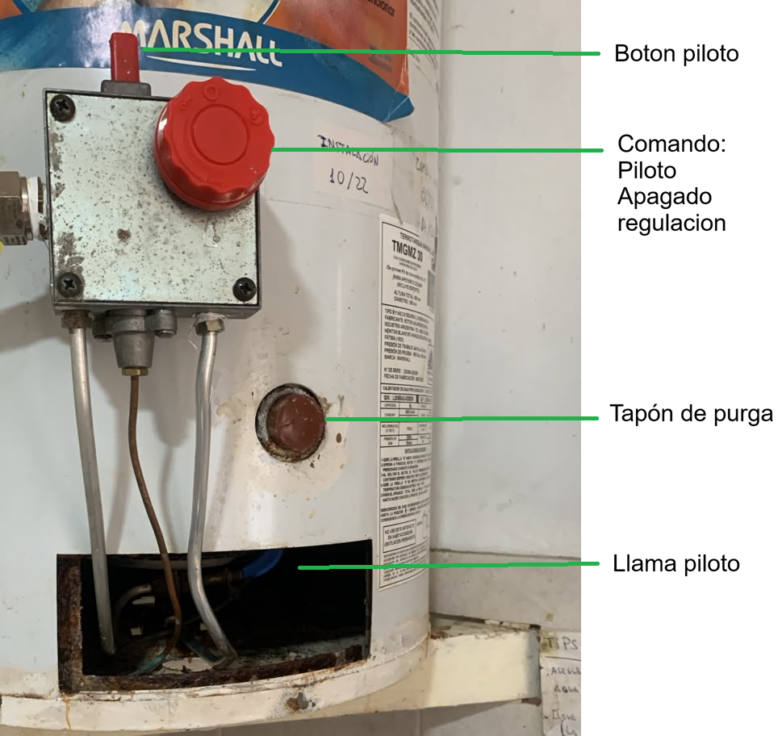

Información del equipo
Instalado en Octubre 2022. Le hacemos un cambio de ánodo una vez al año. En este procedimiento se retira el anodo superior y drenamos el agua por el tapon de purga
Foto del Termotanque

Procedimiento de encendido
Abrir el agua (llave que está en la galería)
Abrir el gas (manivela en sentido vertical)
Sacar la tapar protectora del piloto para poder encender
Mover la llave roja a posición “piloto”
Apretar el botón superior y encender la llama piloto
Dejar unos segundos y soltar. En caso que se apague, repetir el procedimiento por mas tiempo
Colocar la tapa protectora nuevamente. Regula el aire que entra en la combustión
Contacto
WhatsApp: +54 93517600841..
Email: diegobessler@hotmail.com